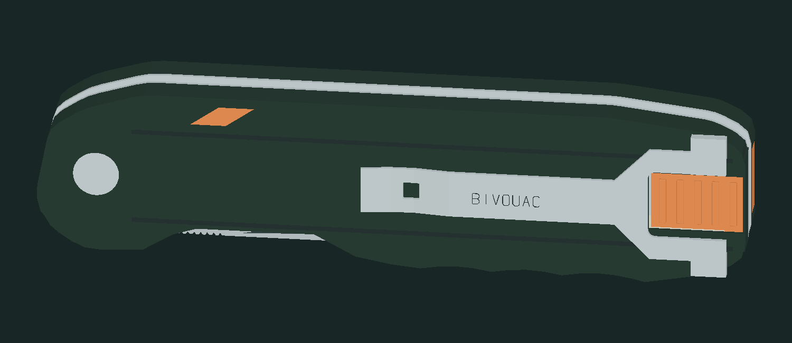

Faire imprimer l’étui compatible
Étui creux sans verrou, avec jeu de passage et petit gabarit d’ajustement facultatif.
Ouvrir les fichiers de l’étui E1Maquette plastique à envoyer à l’imprimeuse
Un seul solide fermé de 120 × 30 × 16,1 mm, avec clip fixe, dos plat et reliefs principaux. Modèle corrigé et essai de tranchage réussis.
Ouvrir le nouveau paquet d’impression P1Cette maquette inerte remplace le STL complet reçu précédemment pour l’essai de prise en main. Les réglages machine et les supports seront préparés par l’atelier.
Vérification du STL complet v28
Rapport antérieur, qui ne concerne pas le nouveau fichier P1. Analyse du fichier transmis pour la maquette complète : dimensions cohérentes, mais préparation du maillage à terminer avant impression. Ce contrôle est distinct des deux manches simplifiés du lot 1.
Le ZIP contient le rapport, les contrôles et le STL reçu inchangé, identifié comme non validé. Aucun nouveau fichier prêt à imprimer n’est fourni dans cet ajout.
Faire imprimer le manche en plastique
Deux manches à taille réelle : un sans clip, un avec le volume de la clip fixe. Ils servent à juger la forme dans la main, sans lame ni pièces mobiles.
Le ZIP contient les deux fichiers STL, les consignes et les patrons papier. Archive légère. L’imprimeur vérifiera les réglages dans son logiciel.
Dossier de consultation fabricant
Dimensions, vues, répartition des pièces, matériaux proposés, principes de retenue et liste des éléments à développer.
Le paquet complet contient les PDF, les STL de maquette, les 12 modèles GLB, les contours DXF de référence et les sources modifiables. Environ 2,5 Mo.
Dossier de conception préliminaire, non signé par un ingénieur. Le verrou de lame, les ressorts et les tolérances restent à définir ou à valider. Aucun plan STEP de fabrication n’est fourni.
Patrons papier à taille réelle
Les contours du manche, de l’étui et de la lame. Imprimer à 100 %, sans « Ajuster à la page », puis vérifier la barre de 100 mm avec une règle.
Ouvrir les patrons · PDF, 2 pages